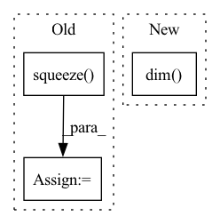

Pattern ID :24086
Before Change
x = self.root(x)
// Remove repetition dimension
x = x.squeeze( 3)
// Remove in_features dimension
x = x.squeeze(1)
After Change
if x.dim() == 2: // [N, D]
x = x.unsqueeze(-1)
if x.dim() == 4: // [N, C, H, W]
x = x.view(x.shape[0], self.config.num_channels, -1)
assert x.dim() == 3In pattern: SUPERPATTERN
Frequency: 3
Non-data size: 3
Instances Fragment ID: 74796100
Project Name: braun-steven/simple-einet
Commit Name: e657fc668bd0f87f5e622a8b2549cd9e8ade437a
Time: 2022-01-11
Author: steven.lang.mz@gmail.com
File Name: simple_einet/einet.py
M Class Name: Einet
N Class Name: Einet
M Method Name: forward(3)
N Method Name: forward(3)
M Parent Class: nn.Module
N Parent Class: nn.Module
M File Name: simple_einet/einet.py
N File Name: simple_einet/einet.py
M Start Line: 128
M End Line: 145
N Start Line: 123
N End Line: 150
Before Change
eps = self.eps
loss = - target * torch.log(input + eps) - (1 - target) * torch.log(1 - input + eps)
loss = loss.squeeze(dim=1) .mean(dim=1)
if batch_mean:
loss = loss.mean(dim=0)After Change
loss = - target * torch.log(input + eps) - (1 - target) * torch.log(1 - input + eps)
n_dims = loss.dim()
dim = tuple(range(1, n_dims))
if reduction == "mean":
loss = loss.mean(dim=dim) Fragment ID: 74796093
Project Name: tky823/dnn-based_source_separation
Commit Name: 56f95a42611aeaeb3499f097d347a17787656474
Time: 2021-12-04
Author: delta9guitar97@gmail.com
File Name: src/criterion/entropy.py
M Class Name: BinaryCrossEntropy
N Class Name: BinaryCrossEntropy
M Method Name: forward(4)
N Method Name: forward(4)
M Parent Class: nn.Module
N Parent Class: nn.Module
M File Name: src/criterion/entropy.py
N File Name: src/criterion/entropy.py
M Start Line: 22
M End Line: 23
N Start Line: 21
N End Line: 34
Before Change
eps = self.eps
loss = - target * torch.log(input + eps) - (1 - target) * torch.log(1 - input + eps)
loss = loss.squeeze(dim=1) .mean(dim=1)
if batch_mean:
loss = loss.mean(dim=0)After Change
loss = - target * torch.log(input + eps)
loss = loss.sum(dim=self.class_dim)
n_dims = loss.dim()
dim = tuple(range(1, n_dims))
if reduction == "mean":
loss = loss.mean(dim=dim) Fragment ID: 74796094
Project Name: tky823/dnn-based_source_separation
Commit Name: 56f95a42611aeaeb3499f097d347a17787656474
Time: 2021-12-04
Author: delta9guitar97@gmail.com
File Name: src/criterion/entropy.py
M Class Name: CrossEntropy
N Class Name: CrossEntropy
M Method Name: forward(4)
N Method Name: forward(4)
M Parent Class: nn.Module
N Parent Class: nn.Module
M File Name: src/criterion/entropy.py
N File Name: src/criterion/entropy.py
M Start Line: 44
M End Line: 47
N Start Line: 55
N End Line: 69